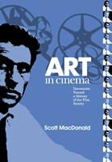

Fascinating documentation of one of the most important film societies in American history
Fascinating documentation of one of the most important film societies in American history


 Fascinating documentation of one of the most important film societies in American history
Fascinating documentation of one of the most important film societies in American history

|  |
Art in CinemaDocuments Toward a History of the Film SocietyScott MacDonaldcloth EAN: 978-1-59213-425-0 (ISBN: 1-59213-425-4) |
"Art in Cinema is an extremely important editorial undertaking, completed with all the professionalism and care that we have come to expect from Scott MacDonald's work, for which all scholars with interests in and commitments to American popular culture are extremely grateful."
—David E. James, University of Southern California
From 1946 until 1954, the San Francisco-based film society Art in Cinema presented programs of independent film to audiences at the San Francisco Museum of Art and the University of California, Berkeley. Led by filmmaker Frank Stauffacher, Art in Cinema's programs pioneered the promotion of avant-garde cinema in America.
Scott MacDonald's Art in Cinema presents complete programs presented by the legendary society; dozens of previously unavailable letters between Stauffacher, his collaborators, and filmmakers including Maya Deren, Hans Richter, Vincent Minelli, and Man Ray; a reprint of the society's original catalog, which features essays by Henry Miller and others; and a wide range of other remarkable historical documents.
A companion to Cinema 16 (Temple), a documentary history of the first west coast film society, Art in Cinema provides cineastes, students, teachers, and scholars with extensive and fascinating documentation of one of the most important film societies in American history. Together or separately, the books provide an indispensable reference source for the beginning of this country's love affair with independent film.
Excerpt available at www.temple.edu/tempress
"At the start of my study of the avant-garde cinema more than forty years ago, I studied obsessively a rare library copy of the wonderful Art in Cinema catalogue. With some of the same wonder and pleasure, I have been able to return to it in this new edition, now supplemented by a treasury of dozens of previously unknown letters from the filmmakers and curators who made and presented the films of the San Francisco Renaissance. This is an invaluable resource for everyone interested in the American Avant-Garde Cinema."
—P. Adams Sitney, Professor of Visual Arts, Princeton University, and author of Visionary Film: The American Avant-Garde 1943-2000, Modernist Montage and Vital Crises in Italian Cinema
"MacDonald�s collection helps toward understanding how �alternative� film developed in America...[It] is a valuable source of reference...that will appeal particularly to independent film enthusiasts who will appreciate the significance of this movement and how it became one of the most important film societies in American history."
—Screentrade Magazine
Also available in e-book
List of Illustrations
Acknowledgments
Introduction
The Documents
1. Conversation with Jack Stauffacher, 8/14/99
2. Letter to Arthur Rosenheimer Jr. from Richard Foster, 7/31/46
3. Letter to Lewis Jacobs from Frank Stauffacher, 8/1/46
4. Letter to Maya Deren from Frank Stauffacher, 8/2/46
5. Letter to Richard Foster from Maya Deren, 8/2/46
6. Letter to James and John Whitney from Frank Stauffacher, 8/3/46
7. Letter to Frank Stauffacher from Maya Deren, 8/10/46
8. Letter to Arthur Rosenheimer Jr. from Frank Stauffacher, 8/20/46
9. Letter to Maya Deren from Frank Stauffacher, 8/20/46
10. Letter to Luis Bu�uel from Frank Stauffacher, 8/22/46
11. Letter to Frank Stauffacher from Douglass Crockwell, 8/24/46
12. Letter to Jay Leyda from Frank Stauffacher, 8/25/46
13. Letter to Frank Stauffacher from Douglass Crockwell, 8/31/46
14. Letter to Peggy Guggenheim from Grace L. McCann Morley, 8/31/46
15. Letter to Man Ray from Frank Stauffacher, 9/5/46
16. Letter to Frank Stauffacher from Hans Richter, 9/6/46
17. Letter to Hans Richter from Frank Stauffacher, 9/9/46
18. Program Announcement for Art in Cinema's First Series, 9/46
19. Letter to James and John Whitney from Frank Stauffacher, 9/22/46
20. Letter to Frank Stauffacher from James Broughton, 9/24/46
21. Letter to Mrs. Noble Hamilton from Edward J. Soph, 9/26/46
22. Letter to Frank Stauffacher from James Broughton, 9/26/46
23. Letter to Edward J. Soph from Mrs. Noble Hamilton, 9/28/46
24. Alfred Frankenstein, "Art and Music," from the San Francisco Chronicle, 10/6/46
25. Letter to Richard Foster from Sara Kathryn Arledge, 10/9/46
26. Program Notes for the 10/11/46 Presentation
27. Letter to Frank Stauffacher from Grace L. McCann Morley, 10/22/46
28. Letter to Richard Foster from Margaret Wright and Una Atkinson, 10/24/46
29. Program Notes for the 10/25/46 Presentation
30. Letter to Mrs. Noble Hamilton from Paul Ballard, 10/30/46
31. Program Notes for the 11/1/46 Presentation
32. Letter to Herman G. Weinberg from Frank Stauffacher, 11/8/46
33. Letter to Frank Stauffacher from Hans Richter, 11/9/46
34. Letter to Frank Stauffacher from Lewis Jacobs, 11/12/46
35. Letter to Paul Ballard from Frank Stauffacher, 11/46
36. Letter to Frank Stauffacher from Robert Florey, 2/47 [?]
37. Letter to James W. Moore from Frank Stauffacher, 2/6/47
38. Letter to Frank Stauffacher from James W. Moore, 2/7/47
39. Letter to Frank Stauffacher from James W. Moore, 2/28/47
40. Letter to Frank Stauffacher from Eli Willis, 3/7/47
41. Program Announcement for Art in Cinema's Second Series, 3/47
42. Program Announcement for the First University of California at Berkeley Series
43. Letter to Frank Stauffacher from Emlen Etting, 3/26/47
44. Letter to James W. Moore from Frank Stauffacher, 3/27/47
45. Letter to Frank Stauffacher from James W. Moore, 3/31/47
46. Letter to Frank Stauffacher from Curtis Harrington, 4/3/47
47. Program Notes for the 4/4/47 Presentation
48. Letter to Curtis Harrington from Frank Stauffacher, 4/28/47
49. Letter to Frank Stauffacher from Kenneth Anger, 4/29/47
50. Letter to Frank Stauffacher from Curtis Harrington, 5/6/47
51. Facsimile of Art in Cinema Catalogue (published late 5/47)
52. Letter to Oskar Fischinger from Richard Foster, 6/8/47
53. Letter to Herman G. Weinberg from Frank Stauffacher, 6/21/47
54. Letter to Oskar Fischinger from Harry Smith, 7/25/47
55. Letter to Frank Stauffacher from Kenneth Anger, 7/25/47
56. Letter to Kenneth Anger from Harry Smith, 7/28/47
57. Letter to Harry Smith from William Howe, 7/31/47
58. Letter to Harry Smith from Kenneth Anger, 7/31/47
59. Letter to Miss Bullitt from Hans Richter, 8/14/47
60. Letter to Art in Cinema from Amos Vogel, 9/7/47
61. Letter to Amos Vogel from Frank Stauffacher, 9/13/47
62. Letter to Harry Smith from Jim Davis, 9/14/47
63. Program Announcement for Art in Cinema's Third Series, 9/47
64. Letter to Curtis Harrington from Frank Stauffacher, 9/15/47
65. Letter to Frank Stauffacher from Curtis Harrington, 9/24/47
66. Conversation with Jordan Belson, 7/22/00
67. Letter to Frank Stauffacher from Elwood Decker, 5/48
68. Letter to Frank Stauffacher from Elwood Decker, 6/48
69. Program Announcement for Art in Cinema's Fourth Series, 8/48
70. Letter to Frank Stauffacher from Sidney Peterson, 8/4/48
71. Letter to Frank Stauffacher from Maya Deren, 8/8/48
72. James Broughton, "Frank Stauffacher: The Making of Mother's Day," from SPIRAL, No. 1 (1984)
73. Letter to Frank Stauffacher from Elwood Decker, 10/3/48
74. Letter to Frank Stauffacher from Hans Richter, 10/13/48
75. Letter to Maya Deren from Frank Stauffacher, 1/10/49
76. Letter to Hans Richter from Frank Stauffacher, 1/49
77. Letter to Frank Stauffacher from Hans Richter, 1/21/49
78. Letter to Frank Stauffacher from Maya Deren, 2/8/49
79. Program Announcement for "Contemporary Experimental Films of Importance," 2/49
80. Letter to Hans Richter from Frank Stauffacher, 2/49
81. Letter to Theodore Huff from Frank Stauffacher, 2/49
82. Letter to Frank Stauffacher from James Broughton, 3/49
83. Letter to Frank Stauffacher from James Broughton, 3/8/49
84. Letter to Frank Stauffacher from James Broughton, 3/16/49
85. Letter to Ralph K. Potter from Frank Stauffacher, 3/23/49
86. Letter to Arthur Knight from Frank Stauffacher, 4/2/49
87. Letter to Frank Stauffacher from Arthur Knight, 4/16/49
88. Letter to Frank Stauffacher from Arthur Knight, 5/30/49
89. Letter to Frank Stauffacher from Amos Vogel, 6/7/49
90. Letter to Frank Stauffacher from Theodore Huff, 6/20/49
91. Letter to Frank Stauffacher from Theodore Huff, 7/16/49
92. Letter to Frank Stauffacher from Arthur Knight, 7/17/49
93. Program Announcement for Art in Cinema's Fifth Series, Fall 1949
94. Letter to Hans Richter from Frank Stauffacher, 10/28/49
95. Letter to Frank Stauffacher from Curtis Harrington, 12/1/49
96. Letter to Frank Stauffacher from Jim Davis, 2/25/50
97. Letter to Frank Stauffacher from Symon Gould, 3/1/50
98. Letter to Frank Stauffacher from Jim Davis, 3/21/50
99. Letter to Frank Stauffacher from Arthur Knight, 3/30/50
100. Letter to Grace L. McCann Morley from Frank Stauffacher, 4/50
101. Program Announcement for Art in Cinema's Sixth Series, Spring 1950
102. Letter to Elwood Decker from Frank Stauffacher, 5/17/50
103. Letter to Amos Vogel from Frank Stauffacher, 5/27/50
104. Arthur Knight, "Self-Expression," Saturday Review, 5/29/50
105. Letter to Elwood Decker from Frank Stauffacher, 6/7/50
106. Letter to Rosalind Kossoff from Frank Stauffacher, 6/14/50
107. Letter to Frank Stauffacher from Amos Vogel, 9/4/50
108. Letter to Jim Davis from Frank Stauffacher, 10/4/50
109. Letter to Frank Stauffacher from Jim Davis, 10/7/50
110. Letter to Frank Stauffacher from Arthur Knight, 10/28/50
111. Letter to Arthur Knight from Frank Stauffacher, 11/1/50
112. Letter to Frank Stauffacher from Amos Vogel, 11/28/50
113. Letter to Frank Stauffacher from Hilary Harris, 12/1/50
114. Letter to Grace L. McCann Morley from Frank Stauffacher, 1/8/51
115. Letter to Frank Stauffacher from Amos Vogel, 1/9/51
116. Letter to Amos Vogel from Frank Stauffacher, 1/13/51
117. Letter to Frank Stauffacher from Anne Dubs, with Notes from Maya Deren, 1/30/51
118. Letter to Harold Leonard from Frank Stauffacher, 2/8/51
119. Program Announcement for Art in Cinema's Seventh Series, Spring 1951
120. Letter to Frank Stauffacher from Maya Deren, 3/24/51
121. Letter to Frank Stauffacher from James Broughton, 4/18/51
122. Letter to Vincent Price from Frank Stauffacher, 5/22/51
123. Conversation with Barbara Stauffacher Solomon, 7/18/99
124. Program Announcement for Art in Cinema's Eighth Series
125. Program Notes for the 11/14/52 Presentation, by Frank Stauffacher
126. Program Notes for the 2/23/53 Presentation, by Frank Stauffacher
127. Letter to Frank Stauffacher from Ian Hugo, 7/8/53
128. Letter to Raymond Rohauer from Frank Stauffacher, 8/31/53
129. Letter to Ian Hugo from Barbara Stauffacher, 9/15/53
130. Letter to Barbara Stauffacher from Ian Hugo, 9/18/53
131. Program Announcement for Art in Cinema's Ninth Series, Fall 1953
132. Letter to Frank Stauffacher from Ian Hugo, 9/27/53
133. Program Notes for the 10/2/53 Presentation, by Frank Stauffacher
134. Text of Talk by George Stevens Presented at Art in Cinema on 10/2/53
135. Letter to Ian Hugo from Frank Stauffacher, 10/9/53
136. Program Notes for the 10/9/53 Presentation, by Frank Stauffacher
137. Program Notes for the 10/16/53 Presentation, by Frank Stauffacher
138. Letter to Raymond Rohauer from Frank Stauffacher, 11/10/53
139. Letter to Ian Hugo from Frank Stauffacher, 11/10/53
140. Letter to Amos Vogel from Frank Stauffacher, 11/18/53
141. Letter to John Ford from Barbara Stauffacher, 12/17/53
142. Early Description of Art in Cinema's Tenth and Eleventh Series
143. Letter to Barbara Stauffacher from Vincent Minnelli, 1/18/54
144. Letter to Barbara Stauffacher from Willard Van Dyke, 1/25/54
145. Letter to Willard Van Dyke from Barbara Stauffacher, 1/27/54
146. Letter to Barbara Stauffacher from Fred Zinnemann, 1/29/54
147. Letter to Fred Zinnemann from Frank Stauffacher, 2/1/54
148. Letter to Barbara Stauffacher from Willard Van Dyke, 2/2/54
149. Letter to Fred Zinnemann from Barbara Stauffacher, 3/18/54
150. Program Announcement for Art in Cinema's Tenth Series, Spring 1954
151. Letter to Joseph Youngerman from Frank Stauffacher, 4/12/54
152. Luther Nichols, "Dissertations on the Arts of Movie-Making," New York Times, 4/25/54
153. Letter to Frank and Barbara Stauffacher from Fred Zinnemann, 5/7/54
154. Letter to Rouben Mamoulian from Frank Stauffacher, 5/12/54
155. Letter to Joseph Youngerman from Frank Stauffacher, 5/20/54
156. Letter to Lou Smith from Barbara Stauffacher, 5/28/54
157. Letter to Frank Capra from Barbara Stauffacher, 5/28/54
158. Letter to Frances H. Flaherty from Barbara Stauffacher, 7/8/54
159. Letter to Barbara Stauffacher from Frances H. Flaherty, 7/27/54
160. Program Announcement for Art in Cinema's Eleventh Series, Fall 1954
161. Letter to Francis H. Flaherty from Barbara Stauffacher, 10/18/54
162. Letter to Barbara Stauffacher from Amos Vogel, 8/22/55
Index
Scott MacDdonald has taught at Utica College, Bard College, and Hamilton College. He is the author of ten previous books, including the acclaimed A Critical Cinema: Interviews with Independent Filmmakers, now in five volumes, and Cinema 16: Documents Toward a History of the Film Society (Temple).
Cinema Studies
American Studies
History
Wide Angle Books, edited by Erik Barnouw, Ruth Bradley, Scott MacDonald, and Patricia Zimmermann.
The mission of Wide Angle Books is to document, chronicle, and honor those institutions that have worked effectively to maintain a public presence and public spaces for alternative forms of media. These books recognize that institutional support of media happens at a variety of levels in a film series, in a video distribution organization, in a transnational digital network, in a grassroots production organization and in locations across the globe. Individual volumes in the series focus on such forms of primary documentation as letters, institutional records, and oral histories, presented and contextualized by leading media history scholars.
© 2015 Temple University. All Rights Reserved. This page: http://www.temple.edu/tempress/titles/1819_reg.html.